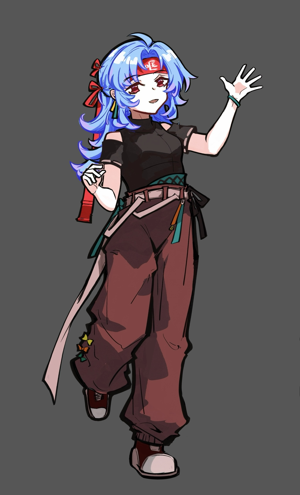
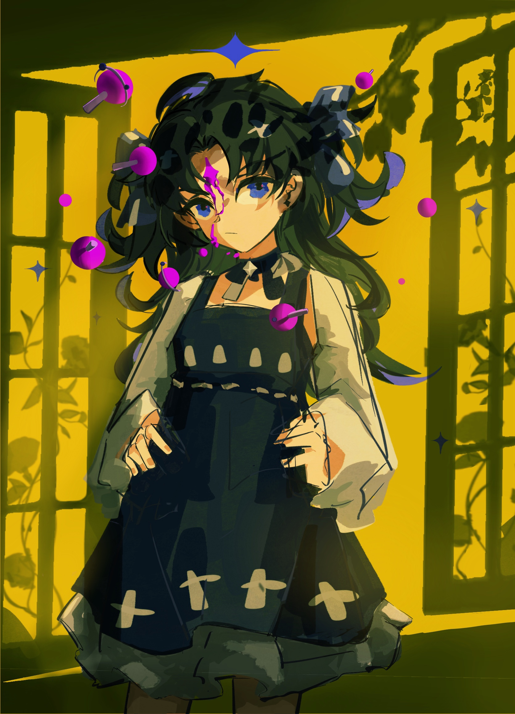
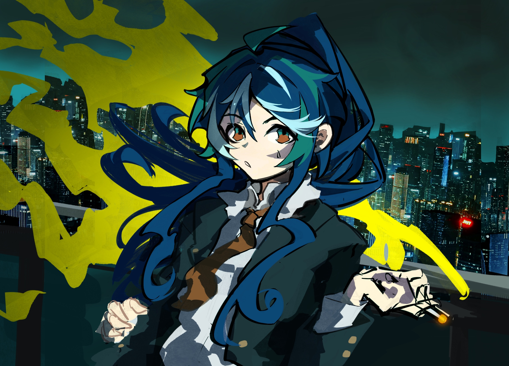
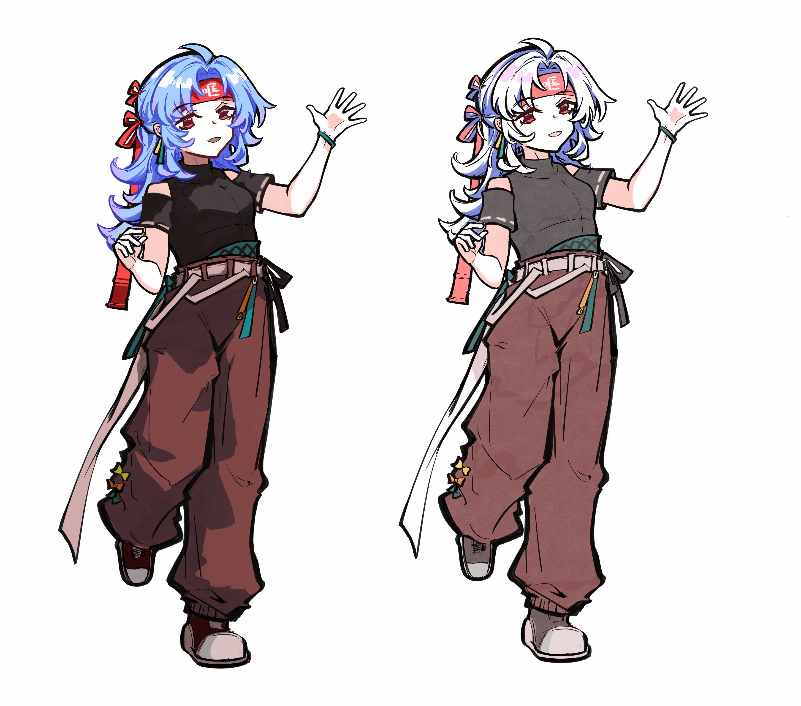
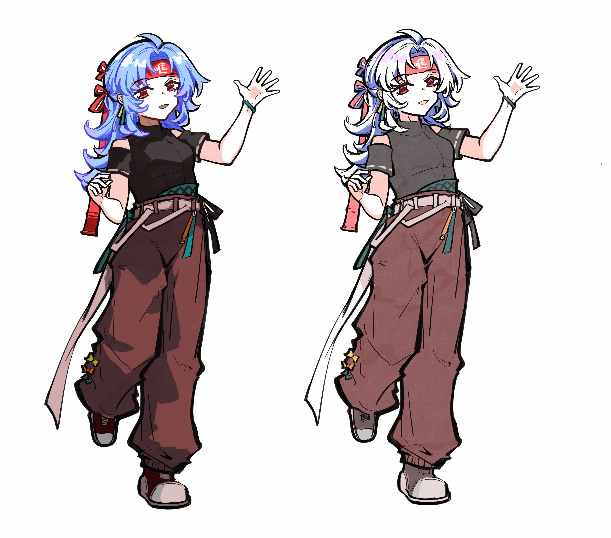

KQLQKQLQF’s Personal Website
Welcome to kqlqkqlqF’s Website!
This is the homepage of kqlqkqlqF’s website. Feel free to explore and enjoy! XD
About Me! (About Us)
[!!! WARNING: If you’re looking for serious content, SKIP THIS CRINGE-INDUCING SELF-INTRODUCTION and proceed directly to the later sections! Trust me, reading this will only make you cringe hard enough to dig a three-bedroom apartment with your toes!!!]

【This is me！kqlq】
Hello, lovely reader who is reading these words. I am kqlq—of course, this is not my real name, just one of my many online aliases. “wodh,” “况且,” “哐切咧切”—these are all usernames I’ve used in the past or still use today. Naturally, these names represent a side of me that differs from the one I present in real life, and now, I will unreservedly reveal this side to you in its entirety. This simple personal website showcases some projects I’ve completed in the past, as well as creations born from my various hobbies. Dear reader, before you continue, let me summarize myself in one sentence. You can think of me as an eccentric creative enthusiast, most skilled at immersing myself in flights of fancy at any given moment… or, to put it less charitably, daydreaming :( Now, let’s step together into this rarely explored world.
First, let’s introduce the real-world side of “Yiyi Feng.” Currently, I am pursuing a bachelor’s degree in Genome Biology and Statistics at the University of Toronto. At first glance, I might seem like a standard STEM student, right? But since middle school, I’ve harbored a dream of becoming an artist. However, when choosing my university major, I hadn’t yet realized the depth of my passion for creation, nor did I fully understand the career prospects, which led me to avoid art-related fields for my undergraduate studies. That said, I absolutely reject the absurd notion that “these four years of undergrad were completely wasted.” During this time, I’ve learned many things I never expected to engage with or master—like analyzing data with R code, extracting DNA in a lab, and more. Without these experiences, I might not even have been able to create the personal website you’re viewing now. Beyond academics, I’ve also spent these years pushing beyond my comfort zone: working late-night shifts as a bartender, teaching myself drawing and creative software like Blender and AE while juggling schoolwork, and posting fanworks on social media. I can proudly say that every experience over these four years, whether good or bad, seemingly useful or a “waste of time,” has collectively shaped who I am today. I am grateful for these experiences, proud to have lived them, and have drawn strength and knowledge from them. Now, after graduating from the University of Toronto, I’m taking a gap year to focus on completing my portfolio and applying for graduate studies in digital media by the end of 2025, officially embarking on my journey to become a professional creator. This will be a new challenge, and I’ll continue giving it my all.
Now, let’s talk about the lighter, fun side of my online persona, “kqlq”! I’m an anime and gaming enthusiast, with RPGs holding a special place in my heart. In my free time outside of studying, I love spending hours developing self-created worlds and stories for original characters. Sometimes, when moved by a game or anime, I’ll also create fanworks—fan art, animations, and the like—for those characters. Below, I’ve included some of my works. Some were completed years ago when my skills were still unrefined, while others are more recent. I’m aware that my current skill level is far from polished, but I’ll continue walking this path with passion, ensuring that every creation is the best I can produce at that moment. My goal is to master illustration and cel-shaded 3D animation techniques before I turn 25, and I’m working hard toward it. Regrettably, even though this is the part of myself I love most, I find it hard to write extensively about it—I feel my current abilities in drawing and animation still fall short, and grand proclamations about my aspirations would only come across as arrogant and unrealistic. So, through graduate studies, I’ll devote all my energy to catching up and learning the craft, letting my work speak for itself.
In short, I’m just an ordinary university student. While brimming with curiosity for the unknown, I’m also proactive in pursuing my goals. So, dear reader, let’s embark on this journey called life together—it’s bound to be a thrilling adventure!
(As for me—or rather, “us”… In my whimsical lore, “Yiyi Feng” is my real-world avatar, while “kqlq” is my virtual projection in the online and creative spheres. Yiyi Feng is calm, rational, and sociable; kqlq is sensitive, possessing the empathy and sensibility essential for a creator. No, I don’t have dissociative identity disorder—this is just a fun personal narrative. Yiyi Feng and kqlq each represent a part of me, and just as all things have two sides, losing either would mean I’m no longer myself. So, don’t worry about whether you’re meeting Yiyi Feng or kqlq—if you’ve encountered one, you’ll inevitably meet the other.)
Videos I (We) Made
【Honkai Star Rail MMD/March 7th】Ink-Wash Style Sword Dance Rendering Test/“Long Life Verse”
【Honkai Star Rail Short Animation】Sunday: Feeling Like There’s Aventurine Crawling On Me [Ratio/Aventurine/Sunday]
【Honkai Impact 3rd Fan Animation】Otto Apocalypse Solo - “Regression”
I share my creative works across multiple platforms, primarily uploading video content to Bilibili while posting image-based works on Xiaohongshu (Little Red Book) and Lofter. My creations predominantly focus on 2D-style fan works, including short anime skits, MMD (MikuMikuDance) animations, and “手书” (illustrated fan motion comics). Additionally, I’m currently developing original projects featuring my own characters and animated worldbuilding concepts. All my content celebrates anime culture, from existing franchise tributes to completely original 2D creations.
My (Our) Github Homepage

It contains some papers I (we) have written about data analysis in the past, as well as related code to support this personal website page. The specific uses of the files in each repository are listed in the Readme, so you can quickly understand these messy folders after reading them.
My (Our) Drawings
   
 


×
(Scroll left/right or up/down to see more works, click on the image to view a high-resolution version)
Some of these drawings are original characters created by me(us), while others are derivative works. Some are created for videos, while others are just illustrations, but all of them were completed within the past year. As my drawing skills still have a lot of room for improvement, I(we) continue to explore and learn new drawing styles.
My (Our) Resume
Just an ordinary resume, presenting the real and serious side of me (us) after returning to life.
If You Want to Contact Me (Us)
If you’ve made it this far without being terrified by my(our?) wonderfully chaotic mental state, feel free to reach out through the contact information below - let’s create and fangirl/boy together!
WeChat ID: kqlqkqlq
Phone: (+86) 13718814903 / (+1) 4376843188
Email: kqlqkqlqkqlqkqlq@gmail.com or kqlqkqlqkqlq@163.com